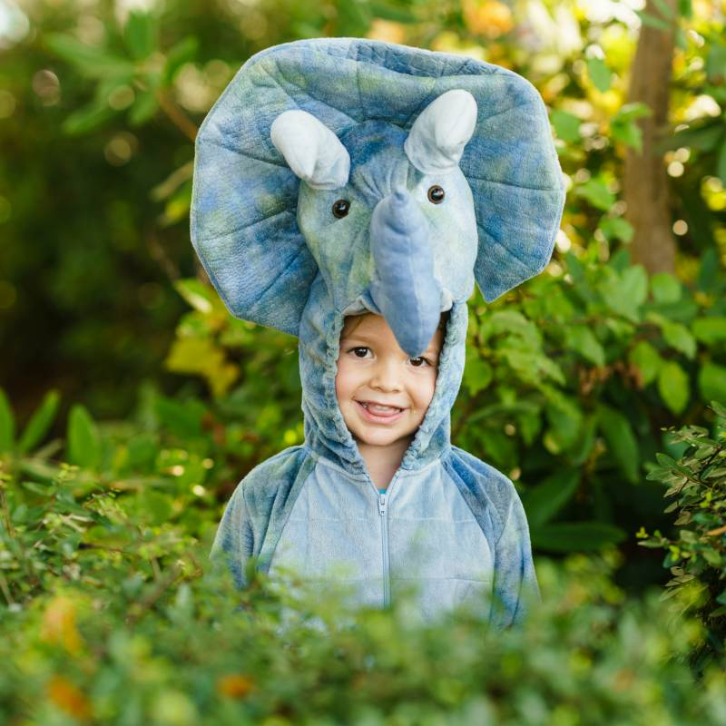

Our Story!

Meet Luke Bearington! At the age of 5, Luke was diagnosed with
Acute Lymphoblastic Leukemia, the most common type of cancer in
children. As Luke spent day after day in Boston's Massachusetts
General Hospital, he found that the kids in his unit needed more
joy in their lives. That's when we decided to found Boston-based
A Dream Day, a nonprofit organization dedicated to bringing
dreams to life in Luke's Memory. For a day we'll transform
your child's hospital room to make their dream a reality. To
remember Luke, dreams are our life.
Donate today and make a dream come true!